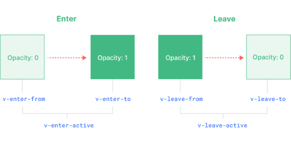

- 过渡组件 - 一个元素或组件进入和离开 DOM 时应用动画
- 弥补了传统CSS的过渡动画transition不能响应display的显示和隐藏状态[???]
- 适用以下场景
- .由 v-if 所触发的切换
- .由 v-show 所触发的切换
- .由特殊元素 <component> 切换的动态组件
- .改变特殊的 key 属性
- 过渡阶段
- 过渡效果包括开始状态|进入enter和结束状态|离开leave两个阶段；每次过渡，只能触发一个阶段的效果：显示或消失
- 每个阶段又可细分为3个子阶段；如下图
- enter：包括：开始的进入和结束，中间则是开始的过渡；如不区分指定，则认为三者是一样的状态，即元素渲染完毕的状态
- leave：包括：离开的进入和结束，中间则是离开的过渡
- 每个阶段都对应一个内置类，默认是v开头；具体的类实现需要自己定义；一般都会搭配原生 CSS 过渡transition或帧动画animation一起使用
-

过渡阶段或过程
- v-enter-from：进入动画的起始状态。在元素插入之前添加，在元素插入完成后的下一帧移除
- v-enter-active：进入动画的生效状态。应用于整个进入动画阶段。在元素被插入之前添加，在过渡或动画完成之后移除。这个 class 可以被用来定义进入动画的持续时间、延迟与速度曲线类型
- v-enter-to：进入动画的结束状态。在元素插入完成后的下一帧被添加 (也就是 v-enter-from 被移除的同时)，在过渡或动画完成之后移除
- v-leave-from：离开动画的起始状态。在离开过渡效果被触发时立即添加，在一帧后被移除
- v-leave-active：离开动画的生效状态。应用于整个离开动画阶段。在离开过渡效果被触发时立即添加，在过渡或动画完成之后移除。这个 class 可以被用来定义离开动画的持续时间、延迟与速度曲线类型
- v-leave-to：离开动画的结束状态。在一个离开动画被触发后的下一帧被添加 (也就是 v-leave-from 被移除的同时)，在过渡或动画完成之后移除
-
仅支持单个元素或组件作为其插槽内容。如果内容是一个组件，这个组件必须仅有一个根元素
元素的CSS效果会叠加到过渡上，如设置了背景颜色，则过渡的进入和退出都将应用该背景属性
- 单击查看元素的淡入淡出 - 基于CSS的transition
- 注意：事件元素应放在过渡组件前面，否则。。。
-
完整代码
<template>
<button @click="flag = !flag">click to switch</button>
<Transition>
<div v-if="flag">true</div>
<div v-else>false</div>
</Transition>
</template>
<script setup>
import { ref } from 'vue';
let flag = ref(false)
</script>
<style scoped>
//没有指定from，则默认是元素渲染完毕的状态，opacity为1
//实现从1到0的过渡
//过渡效果由CSS的transition动画实现
.v-enter-from,
.v-leave-to {
opacity: 0;
}
.v-enter-active,
.v-leave-active {
transition: opacity 3s ease;
}
</style>
- 过渡事件
- 监听 <Transition> 组件事件的方式在过渡过程中挂上钩子函数
-
<Transition
@before-enter="onBeforeEnter"
@enter="onEnter"
@after-enter="onAfterEnter"
@enter-cancelled="onEnterCancelled"
@before-leave="onBeforeLeave"
@leave="onLeave"
@after-leave="onAfterLeave"
@leave-cancelled="onLeaveCancelled"
>
</Transition>
- 单击按钮，提示文字缩小消失后，进入百度主页 - 基于CSS的animation
- 拓展1：请根据实例中的核心代码完成过渡类的设计
- 拓展2：增加其它监听事件，查看过渡效果
- 思考1：如果不增加按钮button，直接把单击事件加到过渡组件或提示文本上???
- 思考2：如果监听CSS的animation事件???
-
<button @click="toBaidu">enter</button>
<Transition name="zoom" @after-leave="onAfterLeave">
<div class="item" v-if="isEnter">click to enter baidu</div>
</Transition>
-
let isEnter = ref(true)
const toBaidu = () => {
isEnter.value = false
}
const onAfterLeave = () => {
console.log('leave end');
window.location.href = 'https://www.baidu.com'
}
- 复用过渡效果
- 将设计好的过渡效果应该到其它组件
- 一个项目中，不同元素的过渡效果应该尽量保持一致
- 封装 <Transition> 组件预留插槽slot，以便不同内容
- 出现时过渡
- 如果你想在某个节点初次渲染时应用一个过渡效果，你可以添加 appear
- 使用appear属性，配合组件封装，实现：加载出现、点击消失的过渡效果
- 1. 封装组件 <Fadein>
-
<template>
<div>
<Transition name="my-fadein" appear>
<slot></slot>
</Transition>
</div>
</template>
<style>
/* scoped 对插槽内容无效；因为插槽仅仅是一个占位符 */
.my-fadein-enter-from,
.my-fadein-leave-to {
opacity: 0;
}
.my-fadein-enter-active,
.my-fadein-leave-active {
transition: opacity 0.4s;
}
</style>
- 2. 使用组件 <Fadein> - 单击时，isShow逻辑取反，略
-
<div>
<button @click="renderDom">render</button>
<Fadein>
<p v-if="isShow">hi,there</p>
</Fadein>
</div>
- 拓展：使用列表渲染，尝试为每一项增加封装的过渡效果；如果需要依次延时渲染，如何实现???
- 动态过渡
- 可以为每个过渡指定name属性加以区分；指定了name属性的过渡，其内置类将不再以v开始，而是以name名开始
- 可以绑定name属性，当状态变化时，动态地应用不同类型的过渡
-
<Transition :name="transition-name" appear>
<slot></slot>
</Transition>